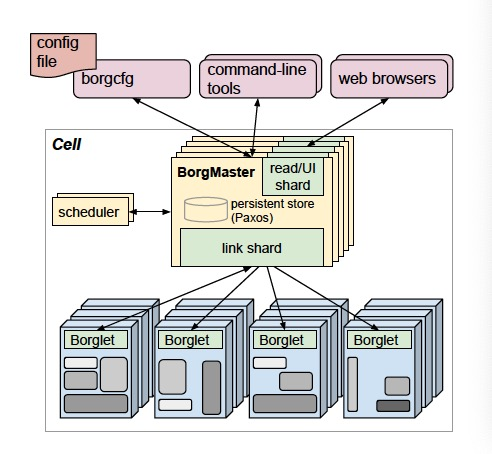

Large-scale cluster management at Google with Borg
A cluster manager runs hundreds of thousands of jobs across clusters effectively and achieves high availability and utilization.
Basics
- Borg admits, schedules, starts, restarts, and monitors the full range of applications that Google runs.
- Borg runs mainly two types of workloads, long-running server jobs and batch jobs.
- A cluster lives inside a datacenter and hosts a Borg cell with median size of 10k heterogenous machines.
- A Borg task maps to a set of Linux processes running in a container on a machine.
- Borg uses quota for admission control and priority for scheduling.
- Borg name service(BNS) writes task's hostname and port to Chubby so RPC system can find task endpoint.
Architecture
- A Borg cell has a logically centralized controller Borgmaster and each machine has an agent process Borglet.
- Borgmaster consists of two processes:
- the main Borgmaster process handles client RPCs, manages state machines and communicates with Borglets,
- the scheduler process assigns tasks to machines with feasibility checking and scoring.
- The Borgmaster is replicated five times and each replica records states in the Paxos store on local disks.
- Borgmaster keeps checkpoints(periodic snapshots plus change log) in the Paxos store.
- Borglet starts/stops tasks and manages local resources. Borgmaster periodically polls Borglets for current state and sends requests.
- The elected master is responsible for preparing messages to Borglets and updating the cell's state. For performance scalability each Borgmaster runs a stateless link shard to handle the communication with some Borglets.

Features
Scalability
- To handle larger cells, split scheduler into a separate process so it can run in parallel with other Borgmaster functions.
- Use separate threads to talk to Borglets and shard functions across Borgmaster replicas.
- Cache scores until machine/task properties change. Ignore small changes to reduce cache invalidation.
- Instead of examining all machines, scheduler examines machines in random order until it finds enough feasible machines to score.
Availability
- Automatically reschedules evicted tasks.
- Reduce correlated failures by spreading tasks of a job across failure domains.
- Use declarative desired-state representations and idempotent mutating operations.
- Already-running tasks continue even if the Borgmaster or the task's Borglet goes down.
Isolation
- Security isolation is implemented with Linux chroot jail.
- Performance isolation is implemented with Linux control groups(cgroups).
- When running out of non-compressible resources(memory, disk, etc), the Borglet terminates task from low priority to high. When running out of compressible resources(CPU cycles, I/O bandwidth, etc), the Borglet throttles usage of not latency-sensitive applications.